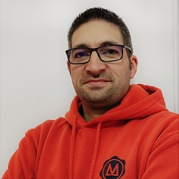

Présentation
Vous l'avez sûrement compris, je m'appelle David DELANNOY...et je suis développeur
Je suis spécialisé en


Je suis marié et père de deux magnifiques enfants
Passionné par la tech depuis mon adolescence, j'ai décidé de me reconvertir dans le développement après une carrière militaire de presque 20 ans.
Je suis musicien (saxophoniste et bassiste) et grand amateur de sport... à la télé !